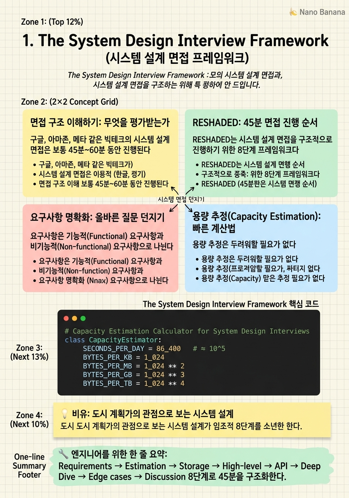

The System Design Interview Framework

🎯 학습 목표
- 빅테크 시스템 설계 면접의 평가 기준 5가지를 설명할 수 있다
- 45분 면접을 시간 배분하여 진행할 수 있다
- 기능적/비기능적 요구사항을 구분하고 질문을 통해 명확히 할 수 있다
- QPS, 스토리지, 대역폭을 빠르게 추정하는 방법을 안다
- High-level 설계도를 그린 뒤 단계적으로 심화 설명할 수 있다
시스템 설계 면접은 코딩 테스트와 근본적으로 다르다. 정답이 하나로 정해진 알고리즘 문제가 아니라, 수백만 명의 사용자를 감당하는 시스템을 제한된 시간 안에 설계하고 그 왜 를 설명하는 오픈엔드(open-ended) 대화다. 면접관은 여러분이 정확한 아키텍처를 그리는지를 보는 게 아니라, 문제를 구조화하는 방식, 트레이드오프를 인식하는 깊이, 실제 시스템 경험을 평가한다.
이 챕터에서는 면접 전반의 흐름과 구조를 이해하고, 어떤 문제가 주어지더라도 일관되게 적용할 수 있는 RESHADED 프레임워크를 소개한다. 또한 많은 지원자가 실수하는 구간인 요구사항 정의와 용량 추정을 제대로 다루는 법을 연습한다.
중요한 점은, 시스템 설계 면접은 암기 과목이 아니라는 것이다. Twitter 설계를 외워봤자 YouTube 문제가 나오면 막힌다. 기초 원리와 컴포넌트에 대한 깊은 이해를 바탕으로, 어떤 문제에든 유연하게 적용하는 능력이 진짜 목표다.
핵심 내용
면접 구조 이해하기: 무엇을 평가받는가
구글, 아마존, 메타 같은 빅테크의 시스템 설계 면접은 보통 45분~60분 동안 진행된다. 면접관은 "URL 단축 서비스를 설계해봐" 또는 "인스타그램의 뉴스피드를 설계해봐" 같은 막연한 문제를 준다. 이 모호함 자체가 테스트의 일부다.
평가 기준은 크게 다섯 가지다.
문제 명확화 능력 — 모호한 문제를 구체적인 요구사항으로 좁히는 능력. 무턱대고 그리기 시작하는 지원자는 즉시 감점이다.
Breadth-First 설계 능력 — 세부사항에 매몰되지 않고 전체 시스템을 먼저 조감하는 능력. 데이터베이스 스키마 한 줄에 10분을 쓰는 사람은 시스템 설계자가 아니다.
트레이드오프 인식 — "왜 MySQL 대신 Cassandra를 썼어?"라는 질문에 "Cassandra는 write-heavy workload에 최적화되어 있고 horizontal scaling이 쉽기 때문"이라고 답할 수 있어야 한다. 단순히 기술 이름을 아는 것 vs. 언제 쓰는지 아는 것의 차이.
실패 시나리오 대응 — "서버 하나가 다운되면?" "트래픽이 갑자기 10배 증가하면?"에 대한 답이 있어야 한다.
소통 능력 — 혼자 조용히 그리다가 5분 만에 완성된 다이어그램을 보여주는 건 나쁜 전략이다. 생각을 말하면서 진행하고, 면접관의 피드백을 적극적으로 유도해야 한다.
RESHADED: 45분 면접 진행 순서
RESHADED는 시스템 설계 면접을 구조적으로 진행하기 위한 8단계 프레임워크다. 각 단계를 순서대로 진행하면 시간 관리와 깊이 모두를 잡을 수 있다.
| 단계 | 내용 | 시간 |
|---|---|---|
| R — Requirements | 기능/비기능 요구사항 명확화 | 5분 |
| E — Estimation | QPS, 스토리지, 대역폭 추정 | 5분 |
| S — Storage Schema | 데이터 모델 및 DB 선택 | 5분 |
| H — High-Level Design | 전체 아키텍처 조감도 | 10분 |
| A — API Design | 핵심 엔드포인트 정의 | 5분 |
| D — Deep Dive | 병목 지점 심화 설계 | 10분 |
| E — Edge Cases | 장애 시나리오, 보안, 모니터링 | 3분 |
| D — Discussion | 면접관의 추가 질문 | 2분 |
이 순서를 외우는 것보다 중요한 것은, 면접관이 어디로 가고 싶은지 파악하는 것이다. "데이터베이스 부분 더 자세히 설명해줄 수 있어?"라는 신호가 오면 Deep Dive를 일찍 시작해야 한다. RESHADED는 가이드라인이지 체크리스트가 아니다.
가장 흔한 실수는 R 단계를 건너뛰는 것이다. 요구사항을 명확히 하지 않으면 설계 전체가 흔들린다. 예를 들어 "Twitter 같은 SNS를 설계해봐"라는 문제에서:
- DAU(Daily Active Users)는 얼마인가? 1M? 100M? 500M? - 쓰기(write)와 읽기(read) 비율은? (Twitter는 read-heavy — 1:100 정도) - 미디어 첨부(이미지, 동영상)를 지원하는가? - 글로벌 서비스인가, 특정 지역 서비스인가? - 실시간 피드인가, 약간의 지연(eventual consistency)을 허용하는가?
요구사항 명확화: 올바른 질문 던지기
요구사항은 기능적(Functional) 요구사항과 비기능적(Non-functional) 요구사항으로 나뉜다.
기능적 요구사항은 시스템이 무엇을 해야 하는지다. URL 단축 서비스라면:
- 긴 URL을 짧은 URL로 변환한다 - 짧은 URL 접속 시 원본 URL로 리다이렉트한다 - URL 만료 기능을 지원한다 - 커스텀 단축 URL을 지원한다 (선택)
비기능적 요구사항은 시스템이 어떻게 동작해야 하는지다. 이것이 아키텍처를 결정하는 핵심이다:
- 가용성(Availability): 99.9%? 99.999%? → 다중화 전략이 달라진다 - 지연시간(Latency): p99 100ms? → 캐시 전략이 달라진다 - 일관성(Consistency): 강한 일관성(strong consistency)? 최종적 일관성(eventual consistency)? → DB 선택이 달라진다 - 확장성(Scalability): 수평 확장? 수직 확장? - 내구성(Durability): 데이터를 절대 잃어선 안 되는가?
빅테크 면접에서 가장 날카로운 지원자는 트레이드오프를 명시적으로 이야기하는 사람이다. "가용성을 최우선으로 하되 짧은 시간의 데이터 불일치는 허용한다" 또는 "쓰기 지연시간보다 읽기 지연시간을 최소화한다"처럼 우선순위를 명확히 하면 이후 설계 결정에 정당성이 생긴다.
용량 추정(Capacity Estimation): 빠른 계산법
용량 추정은 두려워할 필요가 없다. 정확한 값이 아니라 올바른 자릿수(order of magnitude)를 얻는 게 목표다. 아래 기준값을 외워두자.
| 단위 | 기준 |
|---|---|
| 1일 = 86,400초 ≈ \(10^5\)초 | DAU 100M, 각 1회 요청 → 1,000 QPS |
| 1바이트 = 1B, 1KB = \(10^3\)B, 1MB = \(10^6\)B | 트윗 1개 ≈ 280자 ≈ 280B |
| 1Gbps = \(10^9\)bps | 1MB/s = 8Mbps |
Twitter 뉴스피드 예시 추정:
- DAU 300M, 각 사용자 10개 트윗 읽기 → 3B 읽기/일 → 약 35,000 QPS (read) - DAU 300M 중 1%가 트윗 작성, 1일 2회 → 6M 쓰기/일 → 약 70 QPS (write) - Read:Write = 500:1 → 이 시스템은 극단적 read-heavy - 트윗 하나 = 280자 + 메타데이터 = 약 1KB - 쓰기 스토리지 = 70 * 1KB * 86,400 ≈ 약 6GB/일, 10년 = 약 22TB
이 추정이 중요한 이유는 아키텍처 결정을 정당화하기 때문이다. "Read가 압도적으로 많으니 Read 경로에 Redis 캐시를 두고, Write 경로는 단순하게 유지한다"는 결정이 숫자에서 나온다.
면접관이 실제로 찾는 것: 주니어 vs. 시니어 설계의 차이
같은 Twitter 뉴스피드 문제에서 주니어와 시니어 지원자의 차이는 크다.
주니어 지원자의 답변 패턴:
- MySQL 하나에 모든 데이터 저장 - "그냥 서버를 더 추가하면 됩니다" - 모든 것을 monolithic application으로 구현 - 캐시, 메시지 큐 언급 없음 - 장애 시나리오를 생각하지 않음
시니어 지원자의 답변 패턴:
- "트윗 팔로워 수에 따라 fan-out 전략을 다르게 가져가야 합니다. 팔로워 1000명 이하는 fan-out on write, 셀럽 계정(팔로워 수M 이상)은 fan-out on read로 hybrid 방식을 씁니다" - "Redis sorted set으로 타임라인을 캐싱하되, TTL을 24시간으로 설정하고 cache miss 시 DB에서 조회합니다" - "Kafka로 write 이벤트를 버퍼링하여 DB에 직접적인 write spike를 방지합니다" - "CDN으로 미디어 파일을 캐싱하면 origin 서버 부하를 95% 이상 줄일 수 있습니다"
핵심 차이는 숫자와 트레이드오프다. 시니어는 모든 결정에 "왜"가 있고, 대안이 무엇인지, 그 대안의 단점은 무엇인지를 같이 이야기한다.
💡 비유로 이해하기
시스템 설계 면접은 마치 도시 계획가가 신도시를 설계하는 것과 같다. 건물 하나를 짓는 것이 아니라, 도로(네트워크), 전력망(인프라), 상하수도(데이터 흐름), 주거/상업 구역(서비스 분리)을 고려하는 큰 그림이 필요하다.
클라이언트에게 "어떤 도시가 필요하세요?"라고 먼저 물어야 한다. 인구 10만 명의 소도시와 1000만 명의 메가시티는 설계가 완전히 다르다. 인구 10만에 지하철을 깔면 낭비고, 1000만 명에 좁은 왕복 2차선 도로만 있으면 교통마비가 생긴다.
RELD 면접에서 요구사항을 먼저 파악하는 것이 바로 이 "어떤 도시인가"를 묻는 단계다. 용량 추정은 도로 최대 교통량과 상하수도 용량을 계산하는 것이다. 그리고 High-level 설계는 도시 전체 구역 배치도를 그리는 것이며, Deep Dive는 교통 체증이 가장 심한 교차로를 최적화하는 것이다.
💻 코드 예시
시스템 설계 면접 준비를 위한 용량 추정 계산기다. 면접 도중 빠르게 QPS, 스토리지, 대역폭을 추정할 때 머릿속으로 돌리는 계산을 코드로 표현했다.
# Capacity Estimation Calculator for System Design Interviews
class CapacityEstimator:
SECONDS_PER_DAY = 86_400 # ≈ 10^5
BYTES_PER_KB = 1_024
BYTES_PER_MB = 1_024 ** 2
BYTES_PER_GB = 1_024 ** 3
BYTES_PER_TB = 1_024 ** 4
def __init__(self, dau: int, read_per_user: float, write_per_user: float):
self.dau = dau
self.read_per_user = read_per_user
self.write_per_user = write_per_user
def qps(self, requests_per_day: int) -> float:
"""Average QPS — peak is typically 2-3x this."""
return requests_per_day / self.SECONDS_PER_DAY
def storage_per_year(self, record_size_bytes: int) -> float:
write_requests_per_day = self.dau * self.write_per_user
bytes_per_day = write_requests_per_day * record_size_bytes
return bytes_per_day * 365 / self.BYTES_PER_TB
def bandwidth_mbps(self, avg_response_bytes: int) -> float:
read_requests_per_sec = self.qps(self.dau * self.read_per_user)
return (read_requests_per_sec * avg_response_bytes) / self.BYTES_PER_MB
def report(self, record_size_bytes: int, avg_response_bytes: int):
read_qps = self.qps(self.dau * self.read_per_user)
write_qps = self.qps(self.dau * self.write_per_user)
storage_tb = self.storage_per_year(record_size_bytes)
bandwidth = self.bandwidth_mbps(avg_response_bytes)
print(f"DAU: {self.dau:,}")
print(f"Read QPS: {read_qps:,.0f} (peak ~{read_qps*3:,.0f})")
print(f"Write QPS: {write_qps:,.0f} (peak ~{write_qps*3:,.0f})")
print(f"Read:Write ratio = {int(read_qps/max(write_qps,1))}:1")
print(f"Storage/year: {storage_tb:.1f} TB")
print(f"Outbound bandwidth: {bandwidth:.0f} MB/s")
# Twitter-like scenario
estimator = CapacityEstimator(
dau=300_000_000, # 300M DAU
read_per_user=10, # 10 tweet reads per user per day
write_per_user=0.02 # 1% of users write 2 tweets = avg 0.02
)
estimator.report(
record_size_bytes=1_000, # 1KB per tweet
avg_response_bytes=5_000 # 5KB per API response (tweet list)
)핵심 인사이트는 Read:Write ratio다. 이 계산을 하면 Twitter 같은 서비스가 극단적 read-heavy(500:1 이상)임을 알 수 있다. 이 숫자가 나오는 순간, Redis 캐시를 Read 경로에 두는 것이 얼마나 중요한지가 숫자로 정당화된다. 면접에서 이렇게 계산한 뒤 아키텍처 결정을 내리면 훨씬 설득력 있다.
🏭 현업에서의 평가
✅ 시니어가 보는 것
- 요구사항 명확화 없이 바로 설계에 뛰어들지 않는가
- 용량 추정 수치를 기반으로 아키텍처 결정을 정당화하는가
- 트레이드오프를 인지하고 명시적으로 이야기하는가
- 면접관을 파트너로 여기고 소통하며 진행하는가
⚠️ 레드 플래그
- 요구사항 없이 바로 MySQL + REST API 그리기 시작
- 용량 추정을 건너뛰거나 "그냥 서버를 늘리면 됩니다"
- 하나의 결정을 했을 때 "왜"를 설명하지 못함
- 면접관의 힌트성 질문을 무시하고 혼자 진행
🎤 예상 인터뷰 질문
- Twitter의 DAU를 500M으로 가정할 때 필요한 Write QPS와 스토리지를 추정해봐.
- 뉴스피드 시스템에서 기능적 요구사항 3가지와 비기능적 요구사항 3가지를 말해봐.
- Consistency와 Availability 중 어느 쪽을 우선할지 결정하려면 어떤 질문을 해야 해?
✨ 핵심 요약
RESHADED 프레임워크
Requirements → Estimation → Storage → High-level → API → Deep Dive → Edge cases → Discussion 8단계로 45분을 구조화한다.
요구사항이 전부다
비기능적 요구사항(가용성, 지연, 일관성)이 모든 아키텍처 결정의 근거가 된다. 이걸 건너뛰면 설계 전체가 흔들린다.
자릿수만 맞으면 된다
용량 추정은 정확한 수치가 아니라 order of magnitude가 목표다. 100M DAU → 1,000 QPS 수준의 빠른 계산이면 충분하다.
Read:Write 비율이 핵심
이 비율이 캐싱 전략, DB 선택, 확장 방향을 결정한다. 항상 이 숫자를 먼저 계산하라.
트레이드오프를 말로 해라
"A 대신 B를 선택했는데, A는 이런 장점이 있지만 이 요구사항에서는 B가 맞습니다"를 명시적으로 말하는 게 핵심이다.
면접관을 파트너로
혼자 조용히 그리는 건 나쁜 전략이다. 생각을 말하면서 진행하고 피드백을 유도하라.
Deep Dive는 병목을 파라
전체를 다 깊이 파는 게 아니라, 가장 어렵거나 흥미로운 부분 1~2개를 집중적으로 파는 게 좋은 전략이다.
암기가 아닌 원리
특정 서비스 설계를 외우지 말고 원리를 이해해라. 원리를 알면 처음 보는 문제도 풀 수 있다.